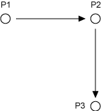
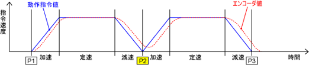
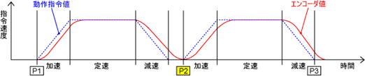
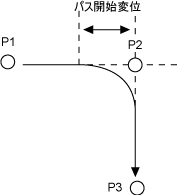
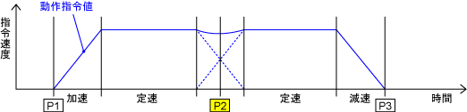
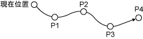

ID : 5230
指定座標への移動（Moveコマンド）
機能
ロボットを現在位置から指定座標へ移動します。
書式
Move 動作補間, 目標位置[, 動作オプション]動作補間、目標位置は入力必須です。動作オプションは必要に応じて入力してください。
動作補間
ロボットアームの先端が移動するとき、その経路は一通りではありません。各軸の動きが組み合わさって、いろいろな経路を作ることができます。直線や円弧になるように制御することもできます。ここでは、目的地点までのアームの動き方を選択します。 P、L、C、Sの4種類の制御動作の中から一つ指定します。
- P ：PTP（Point to Point）制御動作
現在位置から次ポイントへ動作する場合、途中の経路は、ロボットまかせです。
動作時間が最短となるように制御します。 - L ：CP(Continuous Path)制御動作
直線補間 (直線 = Linear)
現在位置と次ポイントを、ハンドの姿勢や速度を一定に保ちながら直線に動作します。 - C ：CP(Continuous Path)制御動作
円弧補間 (円弧 = Circle)
3つのポイントを結ぶ円弧上をロボット先端が動作します。 - S ：CP(Continuous Path)制御動作
自由曲線補間
途中の経路点を指定しておくと、その点同士を滑らかにつないで動作する方法です。
目標位置
目標位置には、移動目標となる動作位置の変数名称を入力します。入力必須です。
変数のポジション型(P型)、ジョイント型(J型)、T型（同次変換型）が使用できます。また、変数の構成はロボットの軸数によって異なります。
各座標値の数値入力もできますが、実際には 変数P○○か変数J○○をよく使用します。
| 変数名 | 変数の構成 | ||||||
|---|---|---|---|---|---|---|---|
| P型 | X | Y | Z | RX | RY | RZ | FIG |
| J型 | J1 | J2 | J3 | J4 | J5 | J6 | |
目標位置には目標位置オプションを付けることができます。
例
'!TITLE "デンソーロボットプログラム"
'プログラムのタイトル( 内容を分かりやすくするための任意のコメント )
Sub Main 'メインプロシージャの宣言
TakeArm Keep = 0 'アーム制御権取得
Speed 80 'アーム移動速度（内部速度）80%
Move P, P1 '変数P1へPTP補間で移動
Move L, P2 '変数P2へCP補間(直線)で移動
Move L, P3 '変数P3へCP補間(直線)で移動
GiveArm 'アーム制御権開放
End Sub 'プログラムの停止目標位置オプション
目標位置オプションには「パス開始変位」と「目標位置の付加軸オプション」があります。
「パス開始変位」の値は、指定座標（ポーズ）を中心とした球の半径で、動作指令値がその中に入ると次の制御へ移ります。mm単位で指定します。言い換えれば、動作するポイントの「止まり方」を表しています。一つの動作から次の動作へと移る場合に、以下のものがあります。
付加軸オプションについては、プログラマーズマニュアルの「目標位置の付加軸オプション」を参照してください。
エンド動作（＠０、または省略時）
プログラム PRO1.pcs
| プログラム | 動作図 |
|---|---|
Sub Main : : |
 |
| 動作波形 | |
|  | |
ティーチングされた動作位置（P2）へ移動して停止する動作を、エンド動作といいます。また、この点を「End点」と呼びます。
動作指令値（モータの命令波形）がP2に達した時点で、P3への移動が開始します。
動作指令値と、エンコーダ値（ツール先端の現在位置を示す値）では、モータ指令値が先行しています。
動作指令値とエンコーダ値の時差の影響で、P2で停止する時間は一瞬となります。
エンコーダ値確認動作（@E 又は @C）
プログラム PRO2.pcs
| プログラム | 動作図 |
|---|---|
Sub Main : : |
|
| 動作波形 | |
|  | |
エンコーダ値がティーチングされた目標位置(P2)に到達したと判断することを、エンコーダ値確認動作といいます。
ロボットが確実に停止し、位置精度が高いことが長所ですが、エンド動作に比べて時間が余分にかかります。
@Eの場合
エンコーダ値が指定角度又はパルス以内に到達したら、次のコマンドの指令を発します。
@Cの場合
エンコーダ値を元に、座標変換された手先の位置と姿勢が 目標位置(P2)に到達したら、次のコマンドの指令を発します。
パス動作(@P)
プログラム PRO3.pcs
| プログラム | 動作図 |
|---|---|
Sub Main : : |
 |
| 動作波形 | |
 |
|
ティーチングされた動作位置（P2）の近くを通過する動作を、パス動作といいます。また、この点を「Pass点」と呼びます。
指定方法
| 種 類 | 記述方法 | 意 味 |
|---|---|---|
| エンド動作 | 省略 | デフォルト値 @0 として処理します。 |
| @0 | モータ指令値が、目標位置（指定座標）に達した時点で、次の動作に移ります。一般的なエンド動作です。 | |
| エンコーダ値 確認動作 |
@E | エンコーダ値が、目標位置（指定座標）に達した時点で、次の動作に移ります。ロボットが確実に停止します。 |
| @C | @Eの内容に加え、ロボットが目標位置（指定座標）へ到達する時、指定した姿勢であることが条件となります。 | |
| パス動作 | @P | 動作目標位置近傍（開始位置はコントローラにて自動設定）を通過動作します。一般的なパス動作です。 |
| @1～ | 指令値が、目標位置から指定した範囲（パス開始変位1㎜～）に達した時点で、次の動作に移ります。 範囲値はパス開始の目安値で保証値ではありません。 |
動作オプション
動作オプションは実行するMove等の動作命令だけに有効で、「速度指定オプション」と「Nextオプション」があります。
速度指定オプション
速度指定オプションにはSpeed、Accel、Decel、Timeがあります。
| 速度指定オプション | 意 味 |
|---|---|
| Speed（またはSと表記） | 内部速度を指定します。 速度指定オプションを同時指定する場合は、Speedオプションの一括指定で行ってください。（Ver.1.8.*以降有効） |
| Accel | 内部加速度を指定します。 Accelを変更すると、Decelも自動的に変更されます。 Decelの値は指定したAccelの値と同じものが入ります。 |
| Decel | 内部減速度を指定します。 |
| Time | 動作にかかる時間を指定します。外部速度100%のときに移動にかける時間を指定します。 |
例
Move L, P1, Speed = 50
'P1の座標へCP制御(直線)、内部速度=50%で移動します
Move L, P1, Accel=10
'P1の座標へCP制御(直線)、内部加速度10%で移動します"Speed"と"Accel"や"Decel"を同時に指定すると、"Speed"により内部加速度や内部減速度パラメータが上書きされますので一緒には使用できません。
これらの速度指定オプションを同時指定したい場合は、Speedオプションの一括指定を使用してください。
Move L, P1, S = ( 20, 10, 100 )
‘P1の座標へ CP制御( 直線 )、内部速度20%、内部加速度10%、内部減速度100% で移動します
Nextオプション
Nextオプションとは、指定した動作命令のロボット動作完了を待つことなく、次に続く命令を実行させるためのオプションです。
ただし、次に続く命令がロボット動作中に実行できない命令の場合は、実行できる状態となるまで待ちます。
ロボット動作中に実行できない命令は以下のとおりです。
- すぐに次のコマンドを実行させたくない場合は、Nextオプション付きの動作命令の後に、Arriveコマンドを記述することにより、次コマンドの実行タイミングを指定できます。
- ティーチチェックモードのときは、Nextオプションは無効です。
例
Move P, P( 400, 300, 300, 180, 0, 180, -1 ), Next
' 動作を開始したらI/Oポート番号240をON
Set IO[240]その他の入力例
例1
連続したポイントの動作を、1行で記入することもできます。
Move P, P1, P2 P3, P4, Speed = 30上記は下記と同じ記述です
Move P, P1, Speed = 30
Move P, P2, Speed = 30
Move P, P3, Speed = 30
Move P, P4, Speed = 30

「1ステップ」は、P4までの動作全てです。したがって、P1やP2など、途中の点で停めることはできません。
（ステップ送り、ステップ停止時）
例2
目標位置オプションは、目標位置ごとに設定します。
Move P, @P P1, @P P2, P3, P4, Speed = 30上記は下記と同じ記述です。
Move P, @P P1, Speed = 30
Move P, @P P2, Speed = 30
Move P, P3, Speed = 30
Move P, P4, Speed = 30
例3
Move L, P1, Speed = 100
'P1の座標へ（CP制御（直線）、内部速度=100％）移動します
Move P, @30 P2, P3, S = 80
'P2(@30)、P3の座標へ順に (PTP制御、内部速度=80％)移動します
Move L, @20 P4, @50 P5, @100 P6
'P4(@20)、P5(@50)、P6(@100)の座標へ順に（CP制御（直線））動作します
Move L, @P P( 1, 2, 3, 4 )
'P1からP4まで順にCP制御(直線)、パス動作で移動します
Move C, P1, @P P2
'P1を通りP2へ移動する円弧補間動作をします。P2にてパス動作し、次の制御に移りますID : 5230